Method / 01
Method by Bright
Method shaped for education, training & learning services decisions.
Method opens as a clear education decision hub: what Bright offers, who it helps, why it matters, and which route to take first.
The first screen combines positioning, proof, primary action, and fast internal navigation, so people can act immediately or compare the rest of the method route with context.
Clear intakeHuman follow-upPractical reassurance
Black cinematic course hero
Filter the options
Select the closest route and Bright keeps the next step, proof, and follow-up expectation aligned with confidence and progress.
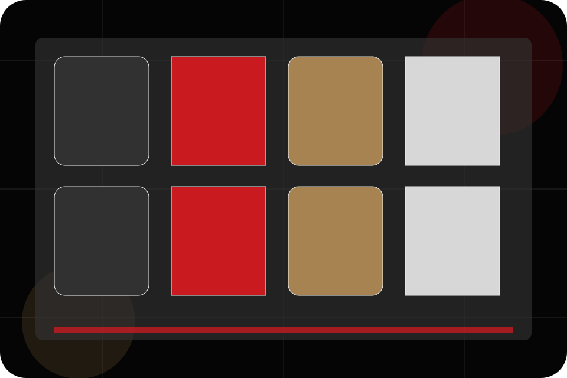
Method / 02
Diagnosis inside method
Diagnosis adds care context to the method route, using the cinematic course catalogue structure to support confidence and progress before visitors choose a next step.
Bright uses lesson trailer cards and focused copy to make the decision easier to scan, aligning the section with confidence and progress rather than filling space.
Explore Method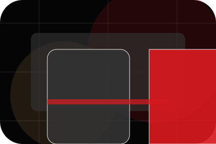
Context
Diagnosis gives the page a specific angle instead of repeating the navigation label.
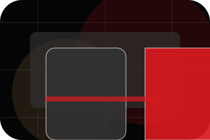
Judgment
The lesson trailer cards show what to compare, what to avoid, and what matters most for education, training & learning services visitors.
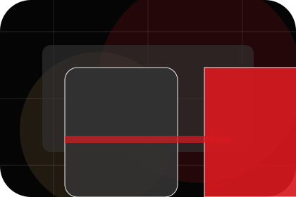
Direction
The final cue points to a useful internal route so the section keeps the journey moving.
Method / 03
Compare service routes
Practice explains the practical scope, best-fit situations, and expected outcome so education visitors can compare options without decoding jargon.
The section keeps the offer concrete: what is included, who it is best for, what decision it supports, and which linked route gives the deeper detail.
Explore MethodBright structures practice around best fit, what changes, and a clear next route so visitors can compare the block quickly before they book a trial.
Book TrialMethod / 04
Compare scope and terms
Feedback makes commercial comparison easier by showing fit, scope, and terms before education visitors ask for the next step.
The layout keeps price-sensitive decisions honest: it separates starting scope, fuller delivery, and ongoing support so the visitor can ask a sharper question.
Explore MethodFit
Who the offer is for, which scope it suits, and when a different route may be better.
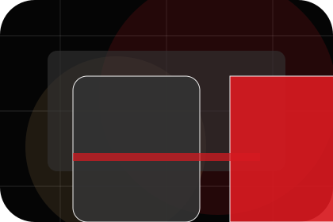
Scope
What is included clearly enough for education, training & learning services visitors to compare value without hidden jargon.
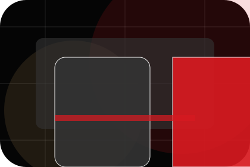
Terms
The practical details that should be confirmed before someone asks to book a trial.
Method / 05
Correction inside method
Correction adds care context to the method route, using the cinematic course catalogue structure to support confidence and progress before visitors choose a next step.
Bright uses lesson trailer cards and focused copy to make the decision easier to scan, aligning the section with confidence and progress rather than filling space.
Explore MethodContext
Correction gives the page a specific angle instead of repeating the navigation label.
Method / 06
Stories behind review
Review converts customer proof into a useful buying signal: the problem, the experience, and what changed afterward.
Proof stays believable by focusing on situation, service experience, and practical change rather than vague praise or unsupported results.
Explore MethodSituation
What the visitor needed before choosing Bright, written with enough context to feel real.
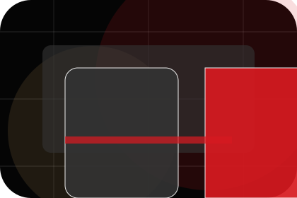
Experience
How the service, product, or support felt during the process, not just that it was good.
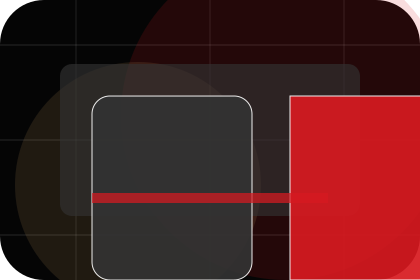
Change
What became easier to decide, complete, buy, book, or trust after the interaction.
Method / 07
Progress inside method
Progress adds care context to the method route, using the cinematic course catalogue structure to support confidence and progress before visitors choose a next step.
Bright uses lesson trailer cards and focused copy to make the decision easier to scan, aligning the section with confidence and progress rather than filling space.
Explore Method- 01
Context
Progress gives the page a specific angle instead of repeating the navigation label.
- 02
Judgment
The lesson trailer cards show what to compare, what to avoid, and what matters most for education, training & learning services visitors.
- 03
Direction
The final cue points to a useful internal route so the section keeps the journey moving.
Method / 08
Confidence inside method
Confidence adds care context to the method route, using the cinematic course catalogue structure to support confidence and progress before visitors choose a next step.
Bright uses lesson trailer cards and focused copy to make the decision easier to scan, aligning the section with confidence and progress rather than filling space.
Explore MethodContext
Confidence gives the page a specific angle instead of repeating the navigation label.
Judgment
The lesson trailer cards show what to compare, what to avoid, and what matters most for education, training & learning services visitors.
Direction
The final cue points to a useful internal route so the section keeps the journey moving.
Method / 09
Independence inside method
Independence adds care context to the method route, using the cinematic course catalogue structure to support confidence and progress before visitors choose a next step.
Bright uses lesson trailer cards and focused copy to make the decision easier to scan, aligning the section with confidence and progress rather than filling space.
Explore Method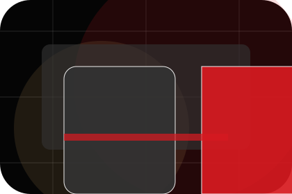
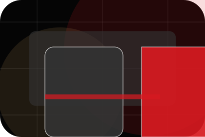
Context
Independence gives the page a specific angle instead of repeating the navigation label.
Method / 10
Book Trial
Bright closes the method route with a clear action, a quick reminder of the value, and a low-friction way to book a trial.
Visitors who are ready can use the primary action. Visitors who are still comparing can scan the section links, proof, and support routes before they book a trial.
Book TrialThe final block keeps the choice simple: act now, compare one more proof route, or send enough detail for a focused response.
Book Trialconfidence and progress
Book Trial
A course-led education site with cinematic hero, lesson shelves, premium teacher proof, and trial routes. Method ends with a direct path to book a trial, plus enough context for visitors who still need to compare.
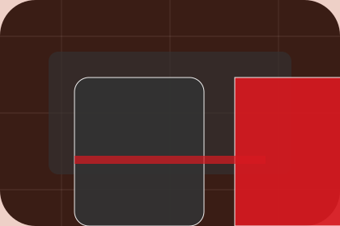
Book Trial